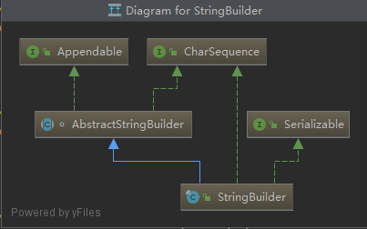
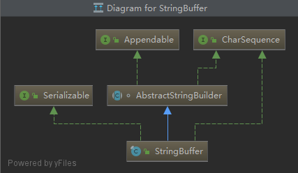

String、StringBuffer与StringBuilder的区别
String
在Java源码中，String类使用final关键字字符数组保存字符串，所以String对象是不可变的。
源码如下
1 | private final char value[]; |
StringBuilder与StringBuffer
我们可以看一下StringBuilder与StringBuffer类的实现树如下：

StringBuilder与StringBuffer都继承了AbstractStringBuilder这个类，在AbstractStringBuilder中是使用字符数组保存字符串的
1 | char[] value; |
所以这两种对象都是可变的。
StringBuilder 与 StringBuffer 的构造方法都是调用父类构造方法也就是 AbstractStringBuilder 实现的。
1 | AbstractStringBuilder() { |
同样两个类也都实现了Serializable与CharSequence这两个接口，提供了序列化与字符串的通用函数。
那么它们的区别在哪里呢？
线程安全性
String 中的对象是不可变的，也就可以理解为常量，线程安全。AbstractStringBuilder 是 StringBuilder 与 StringBuffer 的公共父类，定义了一些字符串的基本操作，如 expandCapacity、append、insert、indexOf 等公共方法。StringBuffer 对方法加了同步锁或者对调用的方法加了同步锁，所以是线程安全的。StringBuilder 并没有对方法进行加同步锁，所以是非线程安全的。
1 |
|
如上图源码所示，在近乎所有的方法体都加了Synchronized关键字来实现线程安全。
性能
每次对 String 类型进行改变的时候，都会生成一个新的 String 对象，然后将指针指向新的 String 对象。StringBuffer 每次都会对 StringBuffer 对象本身进行操作，而不是生成新的对象并改变对象引用。相同情况下使用 StirngBuilder 相比使用 StringBuffer 仅能获得 10%~15% 左右的性能提升，但却要冒多线程不安全的风险。
对于三者使用的总结
- 操作少量的数据 = String
- 单线程操作字符串缓冲区下操作大量数据 = StringBuilder
- 多线程操作字符串缓冲区下操作大量数据 = StringBuffer